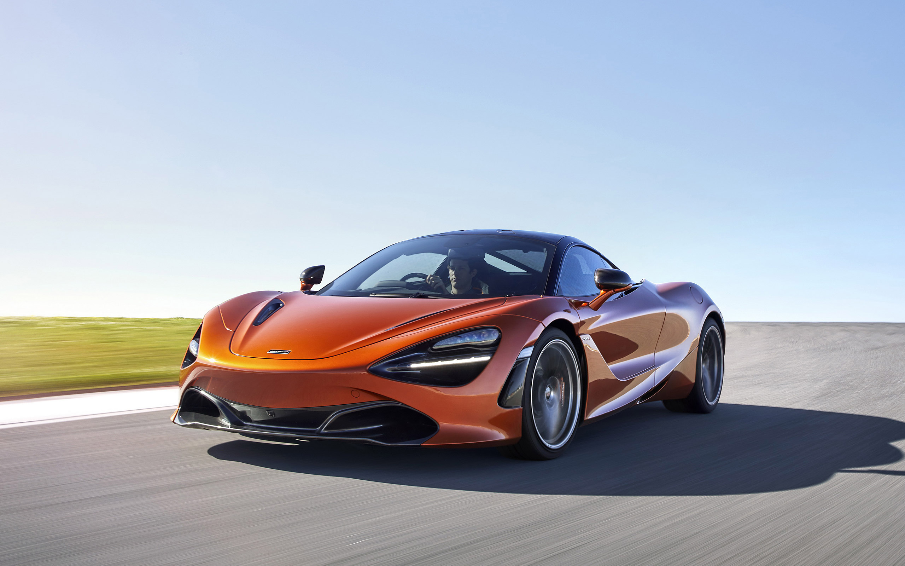
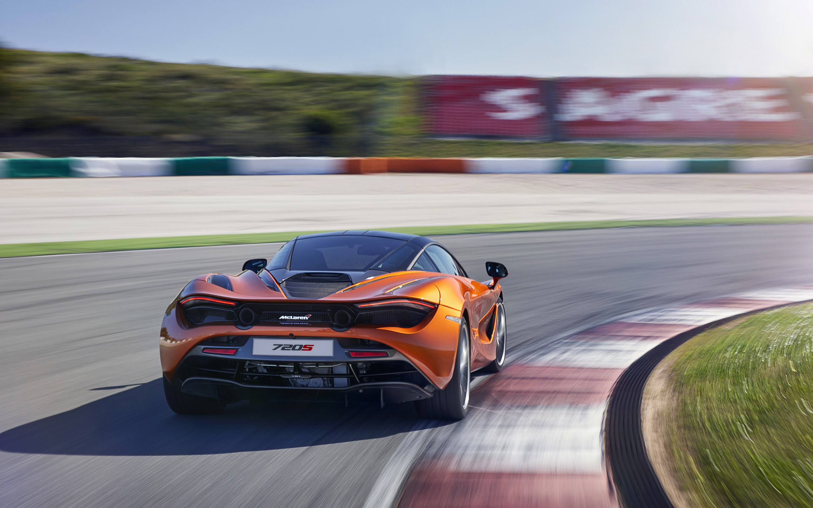

FÜTÜRİSTİK VE HAFİF tasarım
McLaren 720S, akışkan ve dramatik tasarımıyla baktıran bir süperkar. Çift katmanlı hava kanalları, aktif aerodinamik sistemi ve tamamen yeniden tasarlanan monokok karbon fiber şasisiyle her cepheden etkileyici.
- ✓ Papaya Spark Özel Turuncu Renk
- ✓ 20 inç Süper Hafif Forged Jantlar
- ✓ Proaktif asi Kontrol II ve Karbon Seramik Frenler

MİNİMALİST VE TEKNOLOJİK İÇ MEKAN
720S'nin kabini, karbon fiber dokunuşlar ve el yapımı Alcantara detaylarıyla McLaren'inç sürüş tutkusunu yansıtıyor. Yüksek çözünürlüklü merkezi dokunmatik ekran ve katlanabilir gösterge paneli sürücüye tam kontrol veriyor.
- ✓ Siyah/Turuncu Alcantara Yarış Koltukları
- ✓ Karbon Fiber kabin Paketi
- ✓ Bowers & Wilkins Premium Ses Sistemi
TEKNİK MÜHENDİSLİK
0-100 KM/H2.9sn
GÜÇ720hp
MAKSİMUM TORK770nm
MOTOR HACMİ3.994cc
MAKSİMUM HIZ341km/h
BOŞ AĞIRLIK1.283kg
ŞANZIMANSSG7-ileri
ÇEKİŞ SİSTEMİRWDarkadan itiş
SİLİNDİR8V8 twin-turbo